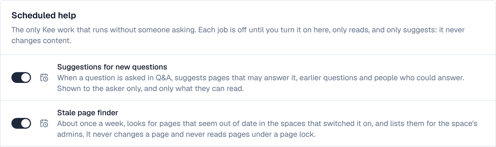
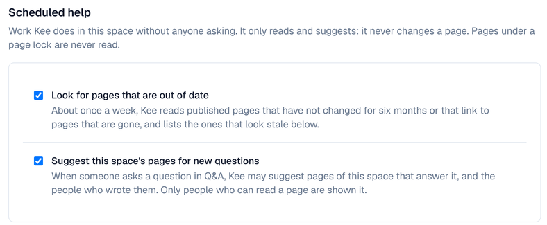
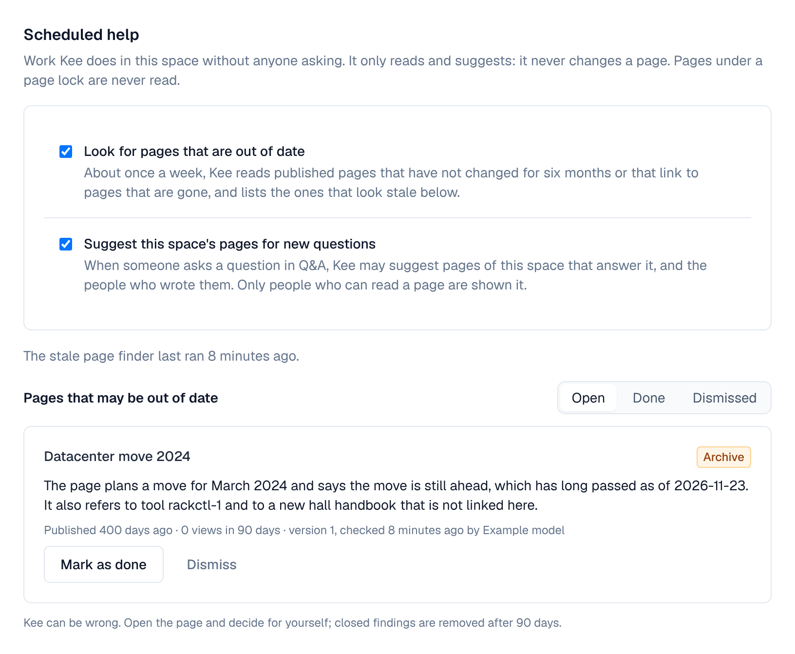

Scheduled help is the only Kee work that runs without someone asking. It reads and suggests; it never changes a page. Two jobs exist: the stale page finder, which lists pages that look out of date for a space's admins, and suggestions for new questions, which shows the asker of a Q&A question pages and people that may answer it.
1. What it never does
- It never changes, archives or deletes a page, and never posts anything. A finding's Update, Archive or Review is advice to a person.
- It never reads a page under a page lock, of any kind, and never suggests one.
- It never reads a space whose admins didn't turn it on, or a space where Kee is off.
- It never shows anyone a page they can't read: findings and suggestions are checked against the reader's access when shown.
2. Turn it on (administrators)
Both jobs are off until an administrator turns them on in the Scheduled help card on Settings → Kee → Features and access, and then a space's admins turn them on for their space.

| Setting | Default | Meaning |
|---|---|---|
| Stale page finder | Off | About once a week, looks for pages that seem out of date in the spaces that switched it on |
| Suggestions for new questions | Off | When a question is asked in Q&A, suggests pages, earlier questions and people. Shown to the asker only |
| Monthly budget for scheduled help | 0 (no budget) | Separate from the budget for people's requests, so background work can never use it up. When it is spent, scheduled help stops until next month. The card shows what was spent this month |
- Scheduled help needs Kee on, a Pro licence and a default model, which it always uses.
- Its requests are in the usage report under their own features, with no person.
- A run stops at once when Kee, the feature or the space's switch is turned off, or the budget is spent; the space's settings say why it stopped.
3. Turn it on for a space (space admins)
- Open the space and select Space settings in its sidebar.
- Open the Kee tab.
- Under Scheduled help, tick Look for pages that are out of date, Suggest this space's pages for new questions, or both. It is saved at once.

If the tab says Your wiki's administrators have not turned this on, ask them. Changing the switches raises space.ai_help.update, which a policy can refuse.
4. The stale page finder
- It looks at published pages that haven't changed for six months, or that link to pages that are gone.
- Kee reads each one with its age and views and decides whether it looks stale. Every finding has a reason and a suggestion: Update, Archive or Review.
- It runs on Mondays at 06:00 (wiki-ai-stale-pages). An administrator can change the schedule or run it now under Settings → Scheduler.
5. Findings
A space's admins see Pages that may be out of date at the bottom of the space's Kee tab, with when the finder last ran.

- Each finding names the page, why it looks stale, the suggestion, when it was published, its views in 90 days and its broken links.
- Mark as done or Dismiss closes it; Open again brings it back. The tabs Open, Done and Dismissed filter the list. Changing a finding raises space.ai_finding.update.
- Closed findings are removed after 90 days. A newer finding about the same page replaces the old one.
- Kee can be wrong. Open the page and decide for yourself.
6. Suggestions for new questions
A few minutes after a question is asked in Q&A, the asker may see Kee suggests under it: pages that may answer it, questions asked before, people who could answer and tags that fit. See Q&A.
- Only the asker sees them, and only pages and questions they can read.
- Pages come only from spaces that turned the suggestions on.
- Matching is by words in titles; the suggestions are a hint, not an answer.
7. What is sent to the provider
| Job | Sent |
|---|---|
| Stale page finder | The text of pages that have not changed for six months or have broken links, with their age and view count |
| Suggestions for new questions | The question, and the titles and first lines of matching pages (from spaces that switched this on) and earlier questions |
8. Scheduled jobs
| Job | When | What it does |
|---|---|---|
| wiki-ai-stale-pages | Mondays at 06:00 | Starts the stale page finder (schedule editable, run now) |
| wiki-ai-help-continue | Every 2 minutes | Carries on a run in batches, and makes suggestions for new questions |
| wiki-ai-help-cleanup | Daily at 03:47 | Removes closed findings after 90 days and old runs |